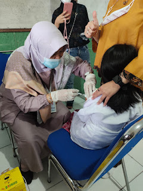

Social Media
© 2023. Puskesmas Siliwangi All Rights Reserved.
Artikel
Imunisasi anak merupakan upaya memperoleh kekebalan tubuh secara buatan melalui pemberian kuman hidup yang dilemahkan atau bagian tubuh dari kuman untuk membentuk antibodi. Imunisasi bertujuan untuk melindungi anak terhadap penyakit tertentu yang dapat dicegah dengan pemberian imunisasi, sehingga angka kejadian penyakit tersebut dapat dikurangi, dan diharapkan dapat membasmi penyakit tersebut secara menyeluruh. Cari tahu lebih lengkap mengenai pentingnya imunisasi pada bayi dari Tim Ahli Nutriclub.
1. Vaksin Hepatitis B
Vaksin Hepatitis B paling baik diberikan dalam waktu 12 jam sesudah kelahiran si Kecil, oleh karena itu, selalu tanyakan pada dokter atau bidan yang membantu persalinan Mama apakah si Kecil telah mendapatkan suntikan vaksin ini. Saat Mama dan si Kecil akan pulang dari tempat bersalin, pastikan juga si Kecil telah mendapatkan vaksin polio oral, yang selanjutnya diberikan ulang pada usia 2, 4 , dan 6 bulan.2, 3, 4
2. Vaksin BCG
Vaksin BCG hanya diberikan sekali dan optimal diberikan pada usia 2 bulan. Pada pemberian vaksin ini, obat akan disuntikkan di bawah kulit dan meninggalkan lentingan di tempat bekas suntikan. Bekas tersebut akan hilang dengan sendirinya dan meninggalkan tanda di lengan kanan si Kecil. Bila si Kecil belum mendapat vaksin BCG hingga usia 3 bulan, akan dilakukan uji tuberkulin terlebih dahulu sebelum diberikan vaksin. Uji tuberkulin dilakukan untuk mengetahui apakah si Kecil sudah terinfeksi, namun si Kecil akan diobservasi dan diberikan pengobatan tuberculosis (TBC) sesuai indikasi
3. Vaksin DTP
Vaksin DTP pertama dapat diberikan bila si Kecil telah mencapai usia 6 minggu. Setelah pemberian vaksin ini, si Kecil mungkin akan mengalami demam, namun Mama tidak perlu khawatir. Bila terjadi demam,yang harus dikonfirmasi terlebih dahulu melalui pengukuran dengan termometer (suhu > 37.5oC), berikan si Kecil parasetamol dengan dosis sesuai berat badan. Tanyakan pada dokter atau bidan yang memberikan imunisasi terkait berapa dosis parasetamol yang tepat untuk si Kecil anda agar dosisnya cukup untuk menurunkan demam. 2, 3, 4
4. Vaksin campak
Vaksin campak diberikan pada usia 9 bulan dan diulang saat usia 24 bulan. Vaksin morbili-mumps-rubella (MMR) dapat diberikan saat si Kecil berusia 15 bulan dan diulang saat usia 6 tahun. Vaksin pneumokokus dapat diberikan pada usia 2, 4, 6 bulan dan 12-15 bulan (4 kali) untuk mencegah terjadinya infeksi paru, telinga, maupun infeksi yang disebabkan kuman pneumokokus.
5. Vaksin rotavirus Vaksin rotavirus dapat diberikan untuk mencegah diare pada si Kecil dan diberikan 2 dosis (monovalen) dan 3 dosis (multivalen) secara oral dengan jarak 4-8 minggu saat si Kecil berusia 8-32 minggu.
6. Vaksin influenza
Vaksin influenza dapat diberikan saat usia 6 bulan-2 tahun, terutama diperuntukan untuk si Kecil dengan kekebalan tubuh yang lemah, atau yang tinggal bersama di asrama. Dosis pertama baiknya diberikan pada usia > 6 bulan dan diberi 2 dosis dengan jarak minimal 4 minggu. Vaksin varisela atau cacar air dapat diberikan di atas usia 1 tahun sebelum si Kecil masuk sekolah. 2, 3, 4
Jadi, yuk segera berikan imunisasi anak yang tepat sesuai jadwal perkembangan usianya! Pemberian vaksin yang tepat akan mencegah terjadinya penyakit yang dapat menyerang sistem kekebalan tubuh si Kecil. Pemberian vaksin yang tepat juga ikut mendukung terbentuknya sistem pertahanan tubuh terhadap penyakit.